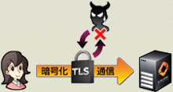

本当の業務改善は高品質な介護ソフトでなければ実現できません。
弊社クラウド（ASP・SaaS）介護ソフトは東京大学高齢社会総合研究機構と共同研究をしております。これからの医療・介護の多職種連携を実現に向けて介護システム研究と実証を繰り返しております。
カナミックネットワークのクラウド(ASP・SaaS)介護ソフトは、介護事業所の業務改善に加え、これからの高齢社会に重要である「地域包括ケア」の実現をシステムでご支援致します。

弊社クラウド（ASP・SaaS）介護ソフトは、Webシステム方式にてご提供しております。インターネットに繋がる環境とPCやスマートフォンをご準備いただければ、介護ソフトすぐに利用開始が可能です。 介護ソフトに関わるサーバの運用・保守・管理は全て弊社が行いますので、お客様内でのサーバ管理等の手間から開放されます。
弊社介護ソフトは、介護の現場で利用される請求・業務管理の機能だけではなく、地域包括ケアに寄与出来る情報連携基盤を有しております（※この仕組みは特許を取得しております。） この情報連携基盤は、多職種多法人が情報共有を行う事が出来る自治体・医療・介護のプラットフォームとしてご活用頂けます。
介護保険法の法改正等における介護ソフトバージョンアップ、電話サポート費用は全て介護ソフト・介護システムの利用料に含まれておりますので、今後法改正等で追加費用が発生する事はございません。 また、社内で『システム向上委員会』を開催毎月のようにシステムの機能アップを行っているところが特徴です。日々進化し、現場業務が楽になるよう取り組んでおります。
システムは、帳票を作ったり介護保険請求をするだけでは、データを活用しきれておりません。カナミックのクラウド（ASP・SaaS）介護ソフトには高度な分析エンジンを搭載しております。 経営分析から管理会計、サービスの分析など溜まったデータを利活用した、介護事業運営に本当に役立つシステムです。
カナミックの介護システムなら、iPhoneやAndroidなどのスマートフォンやiPadなどのタブレット端末からもシステムがご利用になれます。
※iOSやAndroidのバージョンなど端末固有の仕様等によりシステムが正常に動作しない場合がございます。動作環境については別途お問合せください。
厚生労働省、総務省、東京都、神奈川県などで行われている様々なモデル事業で弊社システムは導入・実証され活用されております。


介護ソフトをご使用のお客様のデータは強固なデータセンターで厳重に管理しております。また、弊社サービスでは国内の複数のデータセンターで同期を取って管理・保管を行っております。万が一の災害時にもデータが消失してしまうリスクがありません。
通信路はTLS（Transport Layer Security） + PKI認証により暗号化されデータの盗聴や改ざん、なりすましを防ぎます。医療情報システムの安全管理に関するガイドラインに準拠した運用を行えます。
個人情報保護の観点での「プライバシーマーク」やASP・SaaSを安全に利用できるように始まった「ASP・SaaS安全・信頼性情報開示認定制度」など公的な第三者評価を受けている業界でも数少ない介護ソフトです。
システムユーザー実績約171,000名。
約33,700事業所の医療法人・介護事業所、全国で1,323地域への導入実績がある安心と信頼のシステムです。
（2022年3月時点、無料ユーザーを含む）
他社介護ソフトでも業務多忙から脱却したいご事業所様のシステム乗り換え実績が多数あります。
医療法人鉄蕉会 亀田総合病院および、グループ関連施設では介護保険システムとしてカナミックシステムを全面的に導入しています。ブラウザとインターネット環境さえあれば、どこでも作業できるのも大きな魅力でした。
限りあるサービスをできるだけ効率的に使うことは利用者、事業者、保険者三者に利益のある有意義なことだと思います。そして、データを共通化することで事業者間の質の比較が可能になります。
カナミックシステムのような利用者中心に多事業者のデータが統合されているシステムではその両者が可能となります。これは利用者に多大な利益をもたらします。
カナミックシステムのようなシステムを多くの事業者が使うようになれば、膨大なデータが自然に蓄積され、よりよいケアマネージメントや介護サービスの基礎データが自然にできるでしょう。
通常の作業を行いながら、資源の節約とデータ蓄積の両者が自然と可能になるカナミックシステムを推薦します。
医療機関の分化が進み、急性期病院の平均在院日数が短縮しているため、医療依存度の高い患者が退院を余儀なくされることが増加傾向である。
また、核家族化に伴い家族介護力も低下しており、在宅ケアを継続する上での障害となっている場合も少なくない。
このような状況下では、医療や福祉・介護サービス提供者を交えたケアカンファレンスを定期的に開催することが、患者・利用者にとって満足度の高い生活を支えるために必要となる。
2002年度に伊勢原市で行ったカナミックASP介護ソフトを活用した"ネットケアカンファレンス"は、場所の制約を受けずにしかもリアルタイムで実施できることから有用性は極めて高い結果となった。さらに地域包括支援センターとの連携もデータの一元化により 効率的に機能している。
このようにカナミックASP介護ソフトはスムーズな地域連携ネットワークに必要不可欠なコミュニケーションツールとして期待している。
※首相官邸ＩＴ戦略本部（参考資料）にて「地域介護支援ASP・SaaSにおける成功事例」として紹介されました。
営業担当者からご連絡
お客様専任の営業担当者から、ご連絡させて頂きます。
介護業界に特化し、多数のソリューション実績を持っている専門の営業マンが、お客様の事業所にお伺いして介護システム及び介護ソフトに関するヒアリング及びご説明をさせて頂きます。 現状の問題点や解決したいポイントを明確にし、介護ソフトによるソリューションをご提案させて頂きます。お気軽にご相談ください。
システムの利用申し込みをして頂きます。
弊社には介護ソフト・システム導入支援専門の部署がございます。 既存システムからのデータ移行や操作教育など、 介護ソフト導入に向けて詳しくスケジュールを立てさせて頂きます。
全てのステップで専門のスタッフが担当させて頂きますので、 安心してシステム導入を出来ます。
- ■居宅介護支援
- ■地域包括支援センター
- ■訪問介護
- ■訪問入浴
- ■訪問看護
- ■定期巡回随時対応型訪問介護看護
- ■訪問リハビリテーション
- ■通所介護
- ■通所リハビリテーション
- ■福祉用具貸与・販売
- ■夜間対応型訪問介護
- ■夜間対応型訪問介護
- ■短期入所生活(療養)介護
- ■小規模多機能型居宅介護
- ■看護小規模多機能型居宅介護
- ■居宅療養管理指導
- ■障がい者総合支援
- ■特定施設入居者生活介護
- ■サービス付高齢者向け住宅
- ■住宅型有料老人ホーム
- ■グループホーム
- ■特別養護老人ホーム
- ■介護老人保健施設
- ■勤怠管理システム
- ■債権管理システム
- ■口座振替
- ■ヘルパー給与計算
- ■ヘルパースケジュール携帯送信機能
- ■経営・統計分析（ＢＩツール）

平成23年6月 ASP・SaaS部門「ASPIC会長特別賞」受賞
平成22年2月 ASP・SaaS部門「委員会特別賞」受賞
平成21年2月 ASP・SaaS部門「ベスト公共部門賞」受賞
平成19年11月
「地域連携を実現するための在宅介護支援ネットワークシステム」プランにて最優秀賞受賞